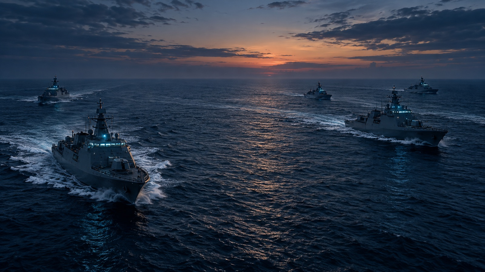
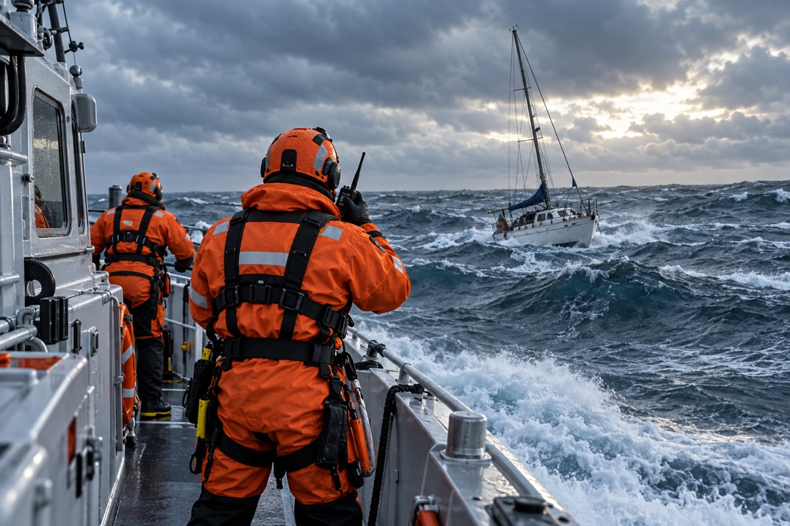

Oceana Prime
This solution focuses on dependable operational communication and information exchange across maritime units. It provides structured channels for tasking messages, operational updates, and brief incident reports to support decision-making in dynamic environments. By standardizing the way information is transmitted across all units, it reinforces disciplined communication practices and ensures that essential directives reach the intended recipients efficiently.
The system incorporates dynamic display of own-vessel and partner vessel locations on a digital maritime chart, supporting real-time orientation during operations. Operators are able to observe positional changes and coordinate movements accordingly, strengthening navigational safety and maneuver coordination. This map-based awareness helps individual units maintain context without replacing formal operational direction or creating a unified situational overview.

The solution also plays a role in maritime monitoring activities by enabling structured event reporting for situations such as distress incidents or suspected illegal activity. Search and rescue information, basic situation updates, and operational summaries can be transmitted quickly to operations centers for evaluation and follow-up action. The emphasis remains on communication reliability and reporting discipline, rather than on building a shared composite view of the entire operating area.